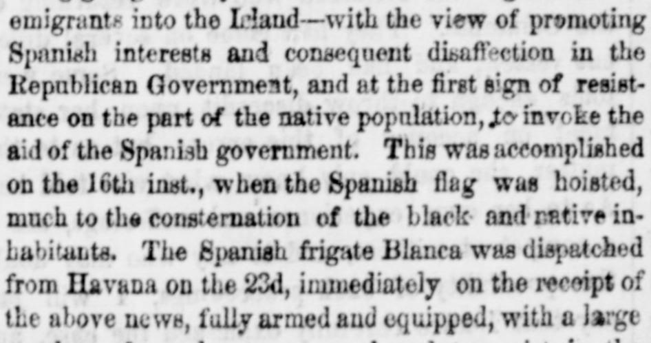
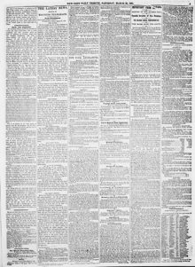

On the 16th inst., when the Spanish flag was hoisted, muchEl día 16 del corriente, cuando se izó la bandera española, mucho
New-York Daily Tribune. New-York [N.Y.], March 30, 1861. Page 5. View the originalVer el original


See the full pageVer la página completaThe New-York daily tribune reported that following the hoisting of the Spanish flag on the 16th—which caused consternation among local inhabitants—the fully armed Spanish frigate Blanca was dispatched from Havana on the 22nd with regular troops to assist the Spanish protectorate or annexation. Additional naval and military forces, along with approximately 5,000 regular troops on the Petronila and Derenguela and about 10,000 more from Spain, were reported to be following. Meanwhile, business on the island remained depressed, and passengers traveling on the Quaker City included ex-President Miramon of Mexico and Major Patterson, a bearer of dispatches from St. Domingo to Spain.El New-York daily tribune informó que, tras el izamiento de la bandera española el día 16 —lo que causó consternación entre los habitantes locales—, la fragata española totalmente artillada Blanca fue despachada desde La Habana el día 22 con tropas regulares para apoyar el protectorado o anexión española. Se reportó que fuerzas navales y militares adicionales, junto con aproximadamente 5.000 soldados regulares a bordo de la Petronila y la Derenguela y unos 10.000 más procedentes de España, les seguirían en breve. Entretanto, el comercio en la isla continuaba deprimido, y entre los pasajeros que viajaban en el Quaker City figuraban el expresidente Miramón de México y el mayor Patterson, portador de pliegos oficiales desde Santo Domingo hacia España.
FULL TEXT:TEXTO COMPLETO:
emigrants into the Island—with the view of promoting Spanish interests and consequent disaffection in the Republican Government, and at the first sign of resistance on the part of the native population, to invoke the aid of the Spanish government. This was accomplished on the 16th inst., when the Spanish flag was hoisted, much to the consternation of the black and native inhabitants. The Spanish frigate Blanca was dispatched from Havana on the 23d, immediately on the receipt of the above news, fully armed and equipped, with a largeemigrantes a la Isla —con miras a promover los intereses españoles y la consecuente desafección en el Gobierno Republicano, y a la primera señal de resistencia por parte de la población nativa, invocar la ayuda del gobierno español. Esto fue logrado el 16 del corriente, cuando la bandera española fue izada, mucho para la consternación de los habitantes negros y nativos. La fragata española Blanca fue despachada de La Habana el 23, inmediatamente al recibo de las noticias anteriores, plenamente armada y equipada, con un gran